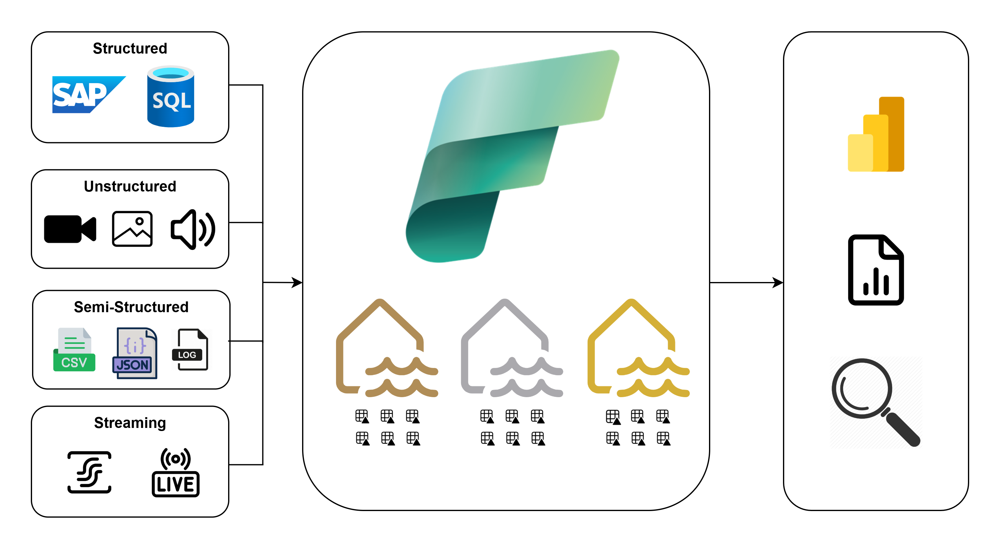

Projects

| ConnectX Command Line Game | |
| Company: School project | Date: Fall 2023 |
| Description: Constructed a scalable Connect4 game with 2 different backend implementations; software design principles included creating requirements analysis, UML diagrams, public and private classes, and an interface to allow for two implementations of data storage (key-value pairs; array-based) | |
| Link: default link | |

| Data engineering with Microsoft Fabric | |
| Company: Milliken & Company | Date: Summer 2025 |
| Description: Creating a pipeline to automate maintenance that optimizes read-access times for data tables and removes old history files for cleaner storage; fixing the data ingestion process for two Power BI reports that were broken due to changing company infrastructure, utilized MS Fabric APIs to retrieve required data and store it in delta tables within a Fabric lakehouse; designing an end-to-end pipeline to ingest, clean, and transform sales and delivery data and present on it with a sample sales order dashboard in Power BI | |
| Link: default link | |

| Counting fish using Computer Vision | |
| Company: NIWC Atlantic | Date: Summer 2024 |
| Description: Engineered a computer vision system to automate the detection, classification, and counting of fish in underwater video footage, supporting marine research at the South Carolina Department of Natural Resources | |
| Link: default link | |